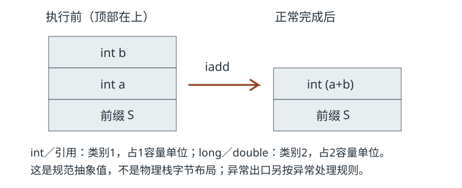

附录 B
类文件与字节码速查
从类文件字段、描述符和栈效果找到解释入口；速查表保留必要条件，不替代完整指令规范。
B.1 先读结构和版本
本表以Java开发工具包（Java Development Kit，JDK）25及Java虚拟机规范（Java Virtual Machine Specification，JVMS）25为边界。普通类文件主版本为69；预览类文件的次版本65535受对应版本与预览开关约束，不能仅按“主版本不大于当前”判断可加载。详细约束见JVMS §4.1。
| 结构 | 速查要点 | 正文示例 |
|---|---|---|
| 魔数与版本 | 魔数0xCAFEBABE；u1／u2／u4按1／2／4字节计数，多字节项采用大端。 | 第4章 |
| 常量池 | 索引从1开始；Long与Double项占两个索引，下一索引不可作普通项引用。符号引用不是对象地址。 | 第4章 |
| 字段／方法 | 名字、描述符、访问标志与属性分工；泛型Signature不替代擦除后的描述符。 | 第4章 |
| Code | max_stack、max_locals、指令数组、异常表及嵌套属性；本地／抽象方法没有Code。 | 第4章 |
| 验证与调试 | StackMapTable描述验证类型；LineNumberTable、局部变量表提供调试信息，两者不互代。 | 第5章 |
| 现代属性 | BootstrapMethods、NestHost／NestMembers、Record、PermittedSubclasses各表不同约束。 | 第4章 |
B.2 描述符和栈计数
操作数栈的箭头写作“入栈前 → 正常完成后”，最右边是栈顶；S代表不变的栈前缀。long／double为类别2值，其栈深容量按两个单位计；引用和int等为类别1。表中记号不是物理字节大小，局部变量槽也不直接对应处理器寄存器。见JVMS §2.6。
| 描述符 | 含义 | 约束 |
|---|---|---|
I / J / D | int／long／double | 不等于源代码关键字的拼写 |
Ljava/lang/String; | String引用 | L、内部名字和分号组成一个类型 |
[I / [[Ljava/lang/String; | int数组／二维String数组 | 每个[增加一维 |
(Ljava/lang/String;)I | 显式参数String，返回int | 实例接收者不写入描述符 |
()V | 无显式参数，返回void | V只用作返回类型 |

B.3 常见指令分类
这里只列本书常用项。完整格式、操作数、链接异常与运行异常以JVMS第6章为准。条件分支使用相对当前指令的偏移；操作码后字节不总是另一个操作码。
| 类别／指令 | 正常栈效果 | 条件与正文 |
|---|---|---|
iconst_n / bipush / sipush | S → S, int | 立即数；第4章 |
ldc / ldc_w / ldc2_w | S → S, value | 常量种类决定值类别；动态常量还涉及引导解析；第15章 |
iload / istore | S → S,int ／ S,int → S | 读写局部槽；第5章 |
iadd / iinc | S,a,b → S,sum ／ S → S | iinc改局部int，不从栈取加数；第13章 |
dup / pop | S,v → S,v,v ／ S,v → S | 这里只适用类别1；dup2／pop2另有合法形态；第5章 |
new / newarray / anewarray | S → S,ref ／ S,count → S,array | new得到未初始化验证类型，构造调用另行完成；第5章 |
getfield / putfield | S,obj → S,value ／ S,obj,value → S | 实例字段，值可能占两容量单位；第4章 |
getstatic / putstatic | S → S,value ／ S,value → S | 静态字段；解析与类型初始化条件见第7章 |
iaload / iastore | S,arr,index → S,int ／ S,arr,index,int → S | 空引用和范围检查不能从表中省略；第13章 |
if_icmp* / if* / goto | S,a,b → S ／ S,a → S ／ S → S | 分支目标必须是合法指令位置；第5章 |
tableswitch / lookupswitch | S,key → S | 含对齐填充与默认目标；第13章 |
checkcast / instanceof | S,ref → S,ref ／ S,ref → S,int | 转换不创建新对象；类型身份含定义加载器；第6章 |
monitorenter / monitorexit | S,ref → S | 异常退出释放路径与所有权分别看；第27章 |
ireturn / lreturn / areturn / return | 返回值转交调用者；return无值 | 方法帧结束，不以S解释调用者整栈；第13章 |
athrow | 异常控制转移 | 不能写成普通pop；匹配处理器入口只有异常引用；第5章 |
B.4 调用、异常与诊断
调用正常返回时，消耗显式参数；实例调用另消耗接收者，再按返回类型压入0／1个值（容量可为2）。invokestatic无接收者；invokedynamic消费调用点描述符参数，没有虚调用那种隐式接收者。invokevirtual／invokeinterface的实际目标选择与invokespecial的特殊语义见第14章；引导方法、调用点和动态常量见第15章。
异常表保护区间为[start_pc,end_pc)，顺序影响匹配；异常边不沿用正常出口的栈状态。StackMapTable验证帧也不是运行时帧快照。对照CH04 parseOrDefault与CH05同步块的实际反汇编，再读解释器帧与异常分派。
诊断从同版本javap的-v、-c、-p开始；完整命令、工作目录和真实类文件见CH04命令、CH05命令。原始类文件编号与HotSpot重写后的运行期索引分开，不能据速查表推定某次内部快路径。
来源
规范：JVMS 25第2、4、6章，2026-11-03实际访问；实现与本书样例：CH04依据、CH05依据、CH13依据、CH14依据、CH15依据。本附录没有生成新类文件或重跑教学程序。